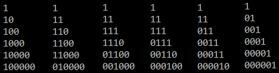

懂了 不组队就不会坑队友了
C. Function
我觉得我会
但是我不会
我开始想的算每个数a[i]在n == x时会被加多少次c[x][i],
然后发现c[x][i] = c[x - 1][i] + c[x - 1][i - 1] + 1,
然后就不会求了
首先: 你要知道\(f(l,
r)\) 会在答案里出现\(\binom{l - 1+ n
-r}{l - 1}\) 次: 可以看作不断把\(f(l,
r)\) 变为\(f(l - 1, r)\) ,
或者\(f(l, r + 1)\) .
然后: 你需要知道对于每个数a[i],
只需要找到所有包含位置\(i\) 的\(f(l, r)\) 出现的次数, 然后加和就可以了
然后你发现对于a[1]到a[n],
他需要加起来的那些组合数在帕斯卡三角中的位置是这样的:

然后发现a[1]到a[i + 1]是加上了一列组合数,
然后删掉了一条斜线上的组合数
然后用两个公式就可以\(\mathrm
O(n)\) 递推了 \[
\sum _{i=0} ^{n} \binom {i} {k} = \binom {n+1}{k+1}\\
\sum _{i=0} ^{n} \binom {m+i} {i} = \binom {n+m+1}{n}
\]
1 2 3 4 5 6 7 8 9 10 11 12 13 14 15 16 17 18 19 20 21 22 23 24 25 26 27 28 29 30 31 32 33 34 35 36 37 38 #include <bits/stdc++.h> using namespace std;#define ll long long #define f(i, x, n) for(int i = x; i < (int)(n); ++i) int const N = 1000000 , md = 1e9 + 7 ;int fc[N + 1 ], inv[N + 1 ], fcin[N + 1 ];void ad (int &x, int y) if ((x += y) >= md)x -= md; }void sb (int &x, int y) if ((x -= y) < 0 )x += md; }int ch (int n, int r) return (ll)fc[n] * fcin[r] % md * fcin[n - r] % md; }void solve () int n; scanf ("%d" , &n); int s = 0 , an = 0 ; f (i, 0 , n){ ad (s, ch (n, i + 1 )); int t; scanf ("%d" , &t); ad (an, (ll)t * s % md); sb (s, ch (n, i)); } printf ("%d\n" , an); } int main () fc[0 ] = 1 ; f (i, 1 , N + 1 )fc[i] = (ll)fc[i - 1 ] * i % md; inv[1 ] = 1 ; f (i, 2 , N + 1 )inv[i] = md - md / i * (ll)inv[md % i] % md; fcin[0 ] = 1 ; f (i, 1 , N + 1 )fcin[i] = (ll)fcin[i - 1 ] * inv[i] % md; int t; scanf ("%d" , &t); while (t--)solve (); }
D. Two Sequences
水题
不开O2甚至会T
1 2 3 4 5 6 7 8 9 10 11 12 13 14 15 16 17 18 19 20 21 22 23 24 25 26 27 28 29 30 31 32 33 34 35 36 37 #pragma GCC optimize(2) #include <iostream> #include <cstdio> #include <cstring> #include <cstdlib> #include <algorithm> #include <set> #define MAXN (100000) using namespace std;set<int > a, b; inline int getint () int re = 0 ; char x = 0 ; while (x < '0' || x > '9' ) x = getchar (); while (x <= '9' && x >= '0' ) re = (re << 1 ) + (re << 3 ) + x - '0' , x = getchar (); return re; } int main () int t = getint (); while (t--) { a.clear (), b.clear (); int n, k; n = getint (), k = getint (); for (int i = 1 ; i <= n; i++) a.insert (getint ()); for (int i = 1 ; i <= n; i++) b.insert (getint ()); set<int >::iterator x = a.end (); for (set<int >::iterator i = a.begin (); i != a.end (); ++i) { set<int >::iterator bx = b.lower_bound (*i); if (bx == b.end () || *bx != *i) x = i; else b.erase (bx); } if (b.size () > 1 || (!b.empty () && abs (*b.begin () - *x) > k)) puts ("NO" ); else puts ("YES" ); } return 0 ; }
H. Win Strategy
写了个贪心, 让最后一道题结束的时间尽量靠前
1 2 3 4 5 6 7 8 9 10 11 12 13 14 15 16 17 18 19 20 21 22 23 24 25 26 27 28 29 30 31 32 33 34 35 36 37 38 39 40 41 42 43 44 45 46 47 48 49 50 51 52 53 54 55 56 57 58 59 60 61 62 63 64 65 66 67 68 #include <iostream> #include <cstdio> #include <cstring> #include <cstdlib> #include <algorithm> #include <queue> #include <set> #define MAXN (1000) using namespace std;struct tas { int a, b, bh; bool operator == (const tas& x) { return (x.a == a && x.b == b); } } ab[MAXN + 5 ]; struct cmp1 { bool operator () (tas x, tas y) return x.b < y.b; } }; struct cmp2 { bool operator () (tas x, tas y) return x.a + x.b < y.a + y.b; } }; int n, l;bool vis[MAXN + 5 ];int main () int t; scanf ("%d" , &t); while (t--) { memset (vis, false , sizeof (vis)); scanf ("%d%d" , &n, &l); for (int i = 1 ; i <= n; i++) scanf ("%d%d" , &ab[i].a, &ab[i].b), ab[i].bh = i; int ans = 0 , j = 1 ; multiset<tas, cmp1> alr; multiset<tas, cmp2> fut; for (int i = 1 ; i <= n; i++) fut.insert (ab[i]); for (int i = 1 ; i <= l;) { for (; j <= n && ab[j].a <= i; j++) if (!vis[j]) { multiset<tas>::iterator x = fut.lower_bound (ab[j]); if (x != fut.end ()) fut.erase (x), alr.insert (ab[j]); } if (!alr.empty () && (fut.empty () || (alr.begin ()->b + i < fut.begin ()->a + fut.begin ()->b))) { if (alr.begin ()->b + i <= l) { i = alr.begin ()->b + i; vis[alr.begin ()->bh] = true ; alr.erase (alr.begin ()); ++ans; } else break ; } else { if (!fut.empty () && (fut.begin ()->a + fut.begin ()->b <= l)) { i = fut.begin ()->b + fut.begin ()->a; vis[fut.begin ()->bh] = true ; fut.erase (fut.begin ()); ++ans; } else break ; } } printf ("%d\n" , ans); } return 0 ; }
蛋是WA了
看题解直接背包 \(\mathrm O(2.5 \times
10^8)\) , 不愧是你
1 2 3 4 5 6 7 8 9 10 11 12 13 14 15 16 17 18 19 20 21 22 23 24 25 26 27 28 29 30 #include <bits/stdc++.h> using namespace std;typedef pair<int ,int > pii;const int N = 1001 ;int n , l , dp[N][N],T;pii a[N]; int calc (int idx , int time) if (idx > n || time > l+1 )return -N; if (idx == n && time == l+1 )return 0 ; int &ret = dp[idx][time]; if (ret != -1 )return ret; ret = max (calc (idx,time+1 ),calc (idx+1 ,time)); if (time >= a[idx].first) ret = max (ret,1 +calc (idx+1 ,time+a[idx].second)); return ret; } int main () cin >> T; while (T--){ memset (dp,-1 ,sizeof dp); cin >> n >> l; for (int i = 0 ; i < n; ++i)scanf ("%d%d" ,&a[i].first,&a[i].second); printf ("%d\n" ,calc (0 ,1 )); } return 0 ; }
By Cansult